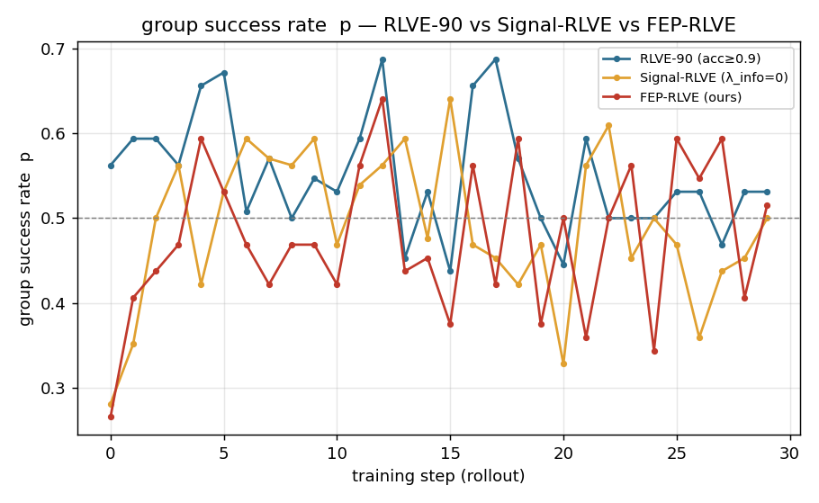
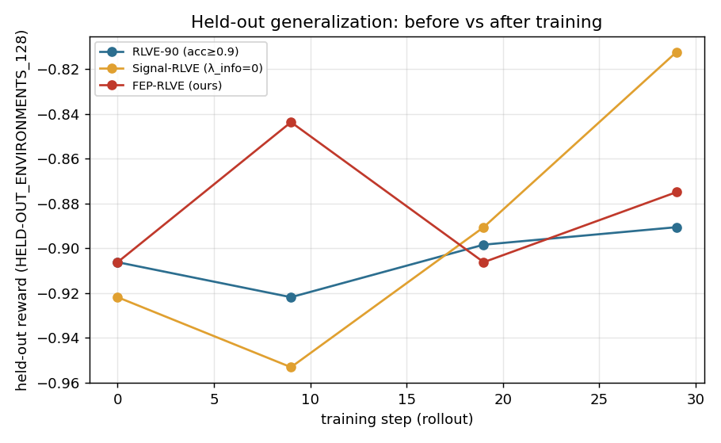

FEP-RLVE: Expected Free Energy
Difficulty Control for Verifiable Environments
背景
现有 RLVE 以验证正确率阈值驱动难度递增，但该准则将任务完成率近似为训练价值，忽略了 rollout 组内奖励方差对策略梯度的决定作用。
在 RLVE 中，每个环境维护一个难度上界；当最近的验证正确率超过阈值时，上界单调上移。 这类难度控制规则隐含假设是“高正确率意味着应当升难”。然而 GRPO/DAPO 的有效更新依赖 rollout 组内的奖励差异；当一组样本全对或全错时，优势估计退化，prompt 对 policy gradient 的边际贡献显著下降。
因此，固定阈值策略存在两个结构性偏差：其一，acc ≥ 0.9 偏向低方差高成功率样本；其二，单调升难缺乏基于观测的回退机制。
自由能原理（Free Energy Principle, FEP）是 Karl Friston 提出的信息物理与认知科学框架，用于解释自组织系统如何在与环境耦合时维持稳定状态。 其基本观点是：系统通过内部生成模型预测感觉输入，并最小化 surprisal，即观测的负对数概率，或其变分上界。
在贝叶斯表述中，系统不能直接访问产生观测的隐藏状态，只能以近似后验 q(s) 表示对隐藏原因的信念； 生成模型 p(o,s)=p(o|s)p(s) 则描述隐藏状态如何生成观测。最小化自由能可被理解为提高预测准确性、约束模型复杂度，并通过 active inference 将感知更新与行动选择统一起来。
| s | 隐藏状态；在本文中对应环境级 latent competence。 |
| o | 观测；在 RLVE 中是验证器返回的 correct/wrong。 |
| q(s) | 环境难度控制器维护的能力信念，实际写作 qe(s)。 |
| p(s | o) | 观测后的真实后验；自由能最小化使 q(s) 向它靠近。 |
| F(q) | surprise −log p(o) 的可优化上界，越低表示信念与观测越一致。 |
自由能推导
下图为自由能示意图与简单推导。

| x | 隐藏状态，外部原因。 | y(a) | 观测，依赖行动 a。 |
| q(x) | 近似后验，当前信念。 | p(x, y(a)) | 联合生成模型。 |
| a | 行动或策略。 | F | 变分自由能。 |
图中 x 为隐藏状态、y(a) 为依赖行动的观测、q(x) 为近似后验；F 是 surprise −ln p(y(a)) 的变分上界。
固定观测、对信念求极小：散度项为零时 q(x) = p(x | y(a))，即贝叶斯感知更新。
同一 F 的另一分解：惩罚信念偏离先验（复杂度），奖励对观测的解释（精度）。
观测依赖行动 y(a)，对行动取极小 F ＝ 最大化模型证据；在 RLVE 中行动即选难度 d，对未来观测取期望得期望自由能。
从自由能视角重写 RLVE 难度选择
我们将环境难度控制器表述为 environment-level active-inference controller：隐藏状态是模型能力，行动是选择题目难度， 观测是验证器的 correct/wrong。
| 自由能概念 | 在 RLVE 中的含义 | 符号 | 作用 |
|---|---|---|---|
| 隐藏状态 | 模型在环境 e 上的 latent competence，不能直接观测，只能由验证器反馈推断。 | se, qe(s) | 替代 RLVE 中单调难度上界，形成可更新的能力信念。 |
| 观测 | 给定难度后，rollout 被验证器判定为 correct/wrong。 | o ∈ {0,1} | 既是训练奖励，也是更新能力后验的证据。 |
| 行动 | 为下一批题目选择候选难度，而不是由固定阈值单调推进。 | d | 从规则式难度调度变为显式行动选择。 |
| 偏好 | 偏好非退化 rollout 组，即组内同时出现 correct 与 wrong，从而保留优势估计。 | UK(p̂e(d)) | 将“高准确率”替换为“高学习信号”。 |
| 目标 | 选择低偏好风险、高信息增益、低成本的难度。 | Ge(d) | 得到可消融的 FEP-RLVE / Signal-RLVE。 |
为每个环境维护 latent competence 后验。
由 IRT 风格似然估计 correct 概率。
联合偏好风险、信息增益与成本项评分。
依据 Boltzmann policy 从候选难度中采样。
将验证器输出作为观测更新后验。
框架、伪代码与训练参数
实现层面，FEP-RLVE 作为 RLVEManager 的可替换环境难度控制器：保留 Gym 环境、验证器与 GRPO 内核， 仅修改题目生成前的难度选择，以及 rollout 后的能力后验更新。
| 项 | 设置 |
|---|---|
| groups | RLVE-90 作为 baseline；Signal-RLVE 与 FEP-RLVE 作为对比组。 |
| training | 4 envs; 30 rollout steps; all groups share the same training budget. |
| samples | K = 4; rollout batch = 8; oversample = 8; used for valid-signal score. |
| controller | λsig = 1; λinfo ∈ {0,1}; T = 0.25; λinfo = 0 gives Signal-RLVE. |
| budget | response length = 2048. |
| evaluation | held-out eval at steps 0, 9, 19, 29. |
结果
受限预算实验表明，较高训练成功率并不必然转化为更强泛化；直接对准有效信号带的 Signal-RLVE 获得最大 held-out 改善。


| RL 难度策略 | 训练正确率均值 mean p |
valid-signal score UK |
最终泛化表现 held-out reward |
相对初始提升 Δ |
|---|---|---|---|---|
| RLVE-90 | 0.552 | 0.853 | −0.891 | +0.016 |
| Signal-RLVE | 0.491 | 0.852 | −0.813 | +0.109 |
| FEP-RLVE | 0.477 | 0.850 | −0.875 | +0.031 |